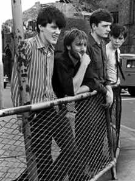
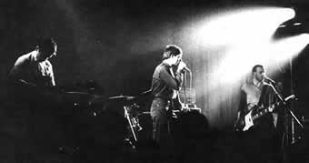

Na década de 70 a Inglaterra foi tomada
pelo movimento Punk. A atitude ousada da juventude que se manifestava
socialmente, ocupou espaço principalmente na música.
Desta forma, bandas como Sex Pistols e The Clash invadiram o cenário
e proclamaram uma nova era musical; onde a técnica e o
refinamento ficaram legados ao segundo plano, e a postura social
foi a principal propulsão. Nesta cena de revolução
juvenil, surgiu o Joy Division.
No dia 9 de dezembro de 1976, os três amigos
Bernard Sumner (guitarra), Peter Hook (contra-baixo) e Terry Mason
(bateria), subiram ao palco para uma apresentação
ao vivo. Porém, a repercussão não foi muito
boa, segundo a revista local Sounds.
A
formação da banda que nascia, seria completada quando
um quarto jovem chamado Ian Curtis respondeu ao anúncio
de jornal de Bernard, procurando por um vocalista. Ian, que era
visto usando uma jaqueta jeans escrita a palavra Ódio,
foi aceito sem ter sido submetido a nenhum tipo de teste, e ingressou
na Warsaw (Varsóvia), nome inspirado
em uma música de David Bowie. Pouco tempo depois,
o baterista Terry abandonou a condição de músico
e tornou-se uma espécie de empresário da banda.
Tony Tabac foi chamado para substituí-lo. Sem ao menos
ter realizado um ensaio, o novo baterista participou de uma apresentação
na casa Electric Circus, em Manchester, no dia 29 de maio de 1977.
Após pouco mais de um mês, Tony foi excluído
por não demonstrar interesse. Desta vez, o substituto foi
Steve Brotherdale, que apesar de ser um bom músico, não
se enquadrou no estilo da banda. Brotherdale ainda fez um convite
para Ian participar de uma outra banda denominada Panik, mas foi
recusado. O baterista definitivo assumiu poucos dias depois: Stephen
Morris, que foi o único a responder um anúncio colocado
numa loja de discos. Assim, finalmente a Warsaw encontrou sua
formação.
No decorrer do ano de 1977, a banda fez apresentações
esporádicas em Manchester e seus arredores. A Electric
Circus estava encerrando suas atividades, e foram agendados dois
festivais para a despedida. A banda participou do segundo e teve
a faixa At A Latter Date, que foi gravada ao vivo, incluída
na coletânea Short Circuit - Live At The Electric Circus.
Infelizmente, eles foram lembrados apenas porque no início
da música, Bernard gritou: "Todos vocês
esqueceram Rudolf Hess!". Naquela época, o ex-carrasco
nazista, com 80 anos, estava preso e sendo fortemente vigiado.
Este fato colaborou para que no futuro, a banda fosse rotulada
como nazista.
Em dezembro, a Warsaw entrou no Penine
Studio para a gravação de quatro faixas lançadas
em junho do ano seguinte na EP independente An Ideal For Living.
Nesta época, descobriram que havia um grupo londrino de
Heavy Metal denominado Warsaw Pakt. Para evitar confusões,
a Warsaw passou a se chamar Joy Division, seguindo a
sugestão de Ian Curtis. Este nome foi extraído do
livro The House Of Dolls, que descrevia os horrores do
nazismo, e significa Divisões do Prazer: alojamentos
destinados às mulheres judias que eram obrigadas a se prostituir
nos campos de concentração nazistas durante a Segunda
Guerra Mundial.
A primeira apresentação como Joy
Division ocorreu no dia 25 de janeiro de 1978, na Pip's Disco,
em Manchester. No dia 14 de abril, a banda participou de um festival
onde o vencedor teria um contrato com a gravadora Stiff. Entre
as dezessete bandas, o Joy Division foi a última a se apresentar.
Não venceu, mas chamou a atenção de Tony
Wilson, apresentador de um programa de TV, e de Rob Gretton, que
tornou-se o empresário.
Nos dias 3 e 4 de maio, gravaram 11 faixas que
comporiam o álbum de estréia da banda pela RCA.
Mas nunca chegou a ser lançado oficialmente, pois os integrantes
não gostaram da produção musical e dos sintetizadores
adicionados posteriormente. Este disco foi disponibilizado apenas
em versões clandestinas, ainda com o nome de Warsaw, e
encontra-se as primeiras versões de Transmission
e Shadowplay, faixas que futuramente se tornariam clássicas.
Segundo Peter Hook: "Havia de repente uma diferença
marcante entre as músicas". Assim, as faixas
compostas após a gravação daquele álbum
eram muito superiores.
Alguns eventos promovidos por Tony Wilson em Manchester,
contaram com a participação de Joy Division. A banda
também participou de uma coletânea intitulada A
Factory Sample da gravadora de Wilson, contribuindo com duas
faixas: Digital e Glass. A partir deste momento,
o produtor Martin Hannett passou a trabalhar com a banda, extraindo
a musicalidade sombria que os integrantes almejavam.
A primeira apresentação em Londres,
ocorreu no dia 27 de dezembro de 1978. Em janeiro do ano seguinte,
gravaram quatro faixas para a emissora BBC, e foram capa da revista
New Musical Express, atraindo a atenção
do público inglês.
O
disco de estréia não poderia tardar. Em abril de
1979 foi gravado o Unknown Pleasures em apenas quatro
dias e meio, e lançado em junho. A ousada produção
de Martin Hanett e o talento dos jovens músicos, fizeram
com que a banda fosse aclamada pela crítica. Assim, o Unknown
Pleasures que trazia vários efeitos de estúdio como
o som de vidros se partindo; além de bateria e baixo em
primeiro plano, foi considerado um dos melhores álbuns
de estréia de todos os tempos.
A banda se apresentava em palcos com pouca ou
nenhuma iluminação. Nas letras e na interpretação,
Ian Curtis abusava da expressão trágica e desesperadora.
Assim, eles conquistaram um grupo fiel de admiradores que se identificavam
com esse aspecto sombrio. As turnês se iniciaram. Os jovens
da França, Alemanha, Bélgica e Holanda viram de
perto a lenda Joy Division, em 1979.
Em 1980, foi lançado um compacto de sete
faixas com um número limitado de 1578 cópias. Com
a produção impecável de Martin Hannett, o
segundo álbum foi gravado em março do mesmo ano
em 12 dias. Os teclados foram o destaque deste disco que teve
a bateria e os vocais gravados numa abóbada de estuque,
especialmente desenvolvida para criar uma atmosfera lúgubre.
Nos meses seguintes, várias apresentações
foram canceladas devido a má saúde de Ian. A epilepsia
tornava-se intensa e os ataques ocorriam no palco. Uma turnê
americana de três semanas nem chegou a iniciar. Assim, no
dia 18 de Maio, Ian Curtis foi encontrado morto em sua casa, enforcado.
O compacto Love Will Tear Us Apart foi
lançado em maio e colocou a banda pela primeira vez no
Top 20 britânico e foi escolhido como o compacto da semana
na New Musical Express. O álbum Closer
lançado no mês seguinte chegou a atingir a sexta
colocação na parada britânica. O álbum
Still de 1981, trazia apenas refugo do estúdio
e o último concerto do grupo. Desde então, inúmeras
compilações foram lançadas e integradas à
discografia da banda. Os remanescentes prosseguiram como New
Order, e se estabeleceram como um dos mais importantes grupos
dos anos 80. Porém, o Joy Division ainda é uma lenda
do Rock mundial. Ian e seus companheiros são cultuados
como verdadeiros símbolos de uma juventude angustiada que
encontrou abrigo e tornou-se órfã com o Joy Division.
Por
Spectrum
Texto
Complementar: